:hover
Se aplica cuando el usuario coloca el cursor sobre un elemento, como un botón, un enlace o una imagen.
:active
Se aplica mientras el usuario mantiene presionado un elemento interactivo, como un botón o un enlace.
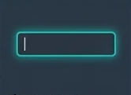
:focus
Se aplica al elemento que tiene el foco, como un campo de texto seleccionado para escribir o un botón seleccionado mediante el teclado.
:visited
Permite cambiar el estilo de los enlaces que el usuario ya ha visitado anteriormente.
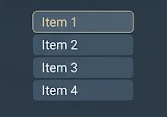
:first-child
Selecciona un elemento cuando ocupa la primera posición entre todos los elementos hijos de su elemento padre.
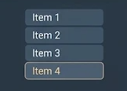
:last-child
Selecciona un elemento cuando ocupa la última posición entre todos los elementos hijos de su elemento padre.
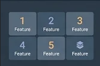
:nth-child(n)
Selecciona un elemento según la posición que ocupa entre sus hermanos. Permite utilizar números, posiciones pares (even) o impares (odd).
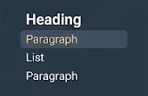
:first-of-type
Selecciona el primer elemento de un tipo específico dentro de su elemento padre. Por ejemplo, el primer párrafo entre sus hermanos.
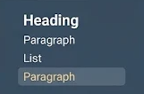
:last-of-type
Selecciona el último elemento de un tipo específico dentro de su elemento padre.
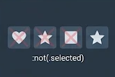
:not(selector)
Selecciona los elementos que no coinciden con el selector indicado. Es útil para aplicar estilos, excluyendo determinados elementos.
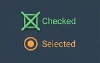
:checked
Selecciona las casillas de verificación y los botones de opción que se encuentran marcados.
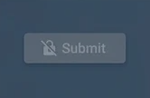
:disabled
Selecciona los controles de un formulario que están deshabilitados y que, por lo tanto, no pueden ser utilizados por el usuario.
:enabled
Selecciona los controles de un formulario que están habilitados y pueden ser utilizados por el usuario.
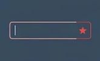
:required
Selecciona los campos de un formulario que tienen el atributo required y que deben completarse antes de enviar el formulario.
:valid
Selecciona los campos de un formulario cuyo contenido cumple con las reglas de validación establecidas.
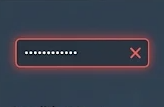
:invalid
Selecciona los campos de un formulario cuyo contenido no cumple con las reglas de validación, como un correo electrónico con formato incorrecto.
:empty
Selecciona los elementos HTML que no contienen otros elementos ni texto en su interior.
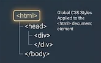
:root
Selecciona el elemento raíz del documento. En HTML, este elemento normalmente es <html> y permite definir variables CSS globales.